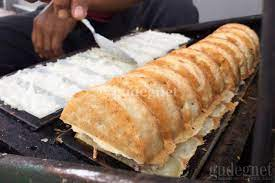

Sejarah
Rangin merupakan makanan tradisional yang sudah ada bahkan sudah terkenal sejak sebelum tahun 50-an yang terpusat di kecamatan wonosalam, yaitu Desa Lempuyang, ploso, karangsambung dan sekitarnya yang sudah menjadi tradisi tahunan, yaitu setiap menjelang lebaran idul fitri atau syawalan, bahkan setiap menjelang puasa masyarakat sudah mempersiapkan bahan – bahan guna pembuatan kue rangin dalam rangka menyambut kedatangan bulan penuh berkah untuk dihidangkan di ruang tamu, bahkan hampir setiap rumah ada kue rangin dan bisa membuat kue rangin terutama ibu-ibu, dan kue rangin juga sudah mulai menjadi tradisi oleh-oleh atau buah tangan setiap bertamu atau berkunjung ke rumah saudara yang ada di luar kota/jawa seperti : lamaran, pernikahan, kunjungan tamu, tunangan, oleh- oleh dari demak bahkan sering dibawa oleh-oleh para TKI ke luar negri untuk oleh-oleh dari kampoeng/demak. Sehingga rangin sangatlah cocok sebagai makanan khas demak karena mempunyai ciri khas dan sejarah yang cukup lama bahkan cocok dengan filosofi sejarah sunan kalijaga dan raden fattah demak yang dulu demak juga terkenal dengan lumbung padinya dan kecamatan wonosalam terkenal dengan pohon kelapanya. Dengan perpaduan itu akhirnya masyarakat wonosalam memberikan nama kue rangin (angin – angin, ilir - ilir) karena bentuknya juga seperti kipas berbentuk kotak., dan pembuatan kue rangin pun masih sangat tradisional dan mempunyai ciri khas tersendiri
Cara Membuat Makanan Gandos Sederhana
Bahan yang perlu di siapkan
Gunakan 1/2 air kelapa agak muda
Siapkan 100 gr tepung ketan
Siapkan 3 sdm gula pasir
Ambil Garam
Gunakan Vanilli
Sediakan secukupnya Air
Langkah pembuatanya
Kupas kulit ari kelapa kemudian parut memanjang
Campur tepung ketan, kelapa parut, gula dan garam. Aduk2 tambahkan air secukupnya. Jangan terlalu lembek atau keras
Kemudian goreng dengan api sedang. Hingga kecoklatan. Dan matang.
Gandos siap di sajikan. Rasanya manis gurih. Lembur di dalam dan renyah luarnya.